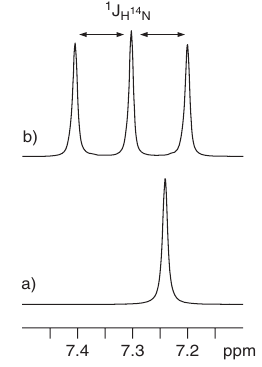

<!DOCTYPE html>
<html lang="en">
<head>
    <meta charset="utf-8">
    <meta name="viewport" content="width=device-width, initial-scale=1.0"> 
    <meta name="description" content="Quadrupolar relaxation"/>
    <title>Quadrupolar relaxation</title>
    <link rel="stylesheet" type="text/css" href="../../style.css" media="screen">
</head>

<body>

<nav>
    <ul>
        <li><a class="navbar" title="home" href="../../index.php">Home</a></li>
        <li><a class="navbar" title="lexicon" href="../../documentation.html">Documentation</a></li>
    </ul>         
</nav>
      
<div class="content">
 
<h1>Quadrupolar relaxation</h1>
      
<p>The quadrupolar relaxation mechanism is only directly relevant for those nuclei that have a nuclear spin quantum number, <i>I</i>, greater than 1⁄2 (quadrupolar nuclei) and is often the dominant relaxation process for these. This can also be a very efficient mechanism, and the linewidths of many such nuclei can be hundreds or even thousands of hertz wide. The properties of selected nuclei with I > 1⁄2 are summarised in Table 2.3. Whilst the direct observation of these nuclei may not be routine for many organic chemists, their observation can, at times, prove very enlightening for specific problems, and the indirect effects they have on the spectra of spin-1⁄2 nuclei should not be overlooked. Quadrupolar nuclei possess an <b>electric quadrupole moment</b> in addition to a magnetic dipole moment. This results from the charge distribution of the nucleus deviating from the usual spherical symmetry associated with spin-1⁄2 nuclei and becoming ellipsoidal in shape. This can be viewed as arising from two back-to-back electric dipoles (Fig. 2.38). As such, the quadrupole moment is influenced by electric field gradients about the nucleus, but not by symmetric electric fields. The gradient is modulated as the molecule tumbles in solution, and again if this occurs at the appropriate frequency, it can induce flipping of nuclear spin states and thus stimulate relaxation. This is analogous to the relaxation of nuclear dipoles by time-dependent local magnetic fields, but the quadrupolar relaxation mechanism is the only one that depends on electric rather than magnetic interactions.<br>The relaxation rates of a quadrupolar nucleus are dictated by two new factors not previously considered. The first is the magnitude of the quadrupole moment itself (Table 2.3). Larger values contribute to more efficient spin relaxation and hence broader linewidths, whereas smaller values typically produce sharper lines. Thus, those nuclei with smaller quadrupole moments are usually more favoured for NMR observation. As before, for the mechanism to be effective, molecular tumbling must occur at an appropriate frequency, so again fast molecular tumbling reduces the effectiveness, leading to longer relaxation times and sharper lines. High temperatures or lower viscosity solvents are thus more likely to produce narrow linewidths. The ultimate in low viscosity solvents are supercritical fluids that have viscosities more like those of a gas yet solubilising properties more like liquids. These have indeed been used in the study of quadrupolar nuclei [11], but since they are only supercritical at very high pressures they demand the use of single-crystal sapphire NMR tubes, so their use cannot be considered routine. The second new factor is the magnitude of the electric field gradient. In highly symmetrical environments, such as tetrahedral or octahedral symmetries, the field gradient is, in principle, zero and the quadrupolar mechanism is suppressed. In reality, local distortions still arise, if only momentarily, introducing an element of asymmetry and hence enhanced relaxation and line broadening. Nevertheless, a higher degree of electrical symmetry can be correlated with narrower resonances. Thus, for example, the <sup>14</sup>N linewidth of N(Me)4<sup>+</sup> is less than 1 Hz whereas that for NMe3 is nearer to 80 Hz. Linewidth changes in 11B spectra (I = 3/2) have been used in the identification of tetrahedral boronic acid complexes at the active site
of &beta;lactamases [12], enzymes responsible for the destruction of &beta;lactam antibiotics such as penicillins, and part of the defence mechanism of bacteria. Boronic acids, such as 3-dansylamidophenylboronic acid 2.5, are known to be reversible inhibitors of active site serine &beta;lactamases, and the complexes so formed display significant changes in the <sup>11</sup>B chemical shift of the boronic acid together with a reduction in linewidth relative to the free acid (Fig. 2.39). This reduction is attributed to the boron nucleus taking up a more symmetrical tetrahedral environment as is becomes bound by the enzyme’s active site serine. This shift and line narrowing can be mimicked by placing the boronic acid in alkaline solution in which the R-B(OH)3<sup>-</sup> ion predominates. The broad resonances of many quadrupolar nuclei means field inhomogeneity makes a negligible contribution to linewidths, so the methods described previously for measuring relaxation times are no longer necessary. For small molecules at least, T<sub>2</sub> and T<sub>1</sub> are identical and can be determined directly from the half-height linewidth. The broad resonances together with the sometimes low intrinsic sensitivity and low natural abundance of quadrupolar nuclei are the principal reasons for their relatively low popularity for NMR studies relative to spin-1⁄2 nuclei. The very fast relaxation of certain quadrupolar nuclei can also make their direct observation difficult with conventional high-resolution spectrometers; see Section 4.5. </p>

<figure>

<figcaption>Figure 2.38. Quadrupolar nuclei lack the spherical charge distribution of spin-1⁄2 nuclei, having an ellipsoidal shape that may be viewed as arising from pairs of electric dipoles. Thus, quadrupolar nuclei interact with electric field gradients.</figcaption>
</figure>

<h2>Scalar coupling to quadrupolar nuclei</h2>

<p>Probably of more relevance to the practising organic chemist is the influence quadrupolar nuclei have on the spectra of spin-1⁄2 nuclei, by virtue of their mutual scalar coupling. Coupling to a quadrupolar nucleus of spin I produces, in theory, 2<i>I</i> + 1 lines, so, for example, the carbon resonance of CDCl<sub>3</sub> appears as a 1:1:1 triplet (<sup>2</sup>H has I = 1) by virtue of the 32 Hz <sup>13</sup>C–<sup>2</sup>H coupling. However, more generally, if the relaxation of the quadrupolar nucleus is rapid relative to the magnitude of the coupling, the splitting can be lost, in much the same way that coupling to a nucleus experiencing rapid CSA relaxation is lost. The carbon resonance of CDCl<sub>3</sub> is only a triplet because deuterium has a relatively small quadrupole moment making its coupling apparent whereas all coupling to the
chlorine nuclei (<sup>35</sup> Cl and <sup>37</sup>Cl have I = 3/2) is quenched by the very rapid relaxation of
these spins (Fig. 2.40). Similarly, the proton resonance of CHCl3 is a sharp singlet despite the presence of the neighbouring chlorine atoms. </p>

<figure>

<figcaption>Figure 2.40. The carbon-13 spectrum of CDCl<sub>3</sub> reveals coupling to deuterium but not to chlorine-35 or
chlorine-37.</figcaption>
</figure>

<p>A common example of line broadening brought about by a quadrupolar nucleus is seen for the resonances of amino and amido protons due to the adjacent <sup>14</sup>N (Fig. 2.31). The appearance of the spin-1⁄2 nucleus spectrum is therefore also influenced by the factors described above, which dictate the rate of quadrupolar relaxation. Couplings to
quadrupolar nuclei that exist in a highly symmetrical environment are likely to be seen because of the slower relaxation the nuclei experience. For this reason, the proton spectrum of <sup>14</sup>NH<sub>4</sub><sup>+</sup> is an unusually sharp 1:1:1 triplet (Fig. 2.41, <sup>14</sup>N has I = 1) and the fluorine spectrum of <sup>11</sup>BF<sub>4</sub><sup>-</sup> is a sharp 1:1:1:1 quartet (Fig. 2.42, <sup>11</sup>B has I = 3/2).</p>

<p>Increasing sample temperature results in slower relaxation of the quadrupolar nucleus, so there is also a greater chance of the coupling being observable. In contrast, reducing the temperature increases relaxation rates and collapses coupling fine structure. This is contrary to the usual behaviour associated with dynamic systems where heating typically leads to simplification of spectra by virtue of resonance coalescence. The likelihood of coupling fine structure being lost is also increased as the magnitude of the coupling constant decreases. In general then, the observation of scalar coupling to a quadrupolar nucleus is the exception rather than the rule.</p>

<figure>

<figcaption>Figure 2.41. The 1H spectrum of ammonium nitrate in DMSO (a) before and (b) after acidificatio. In (b), the NH<sub>4</sub> ion dominates and the induced symmetry reduces the <sup>14</sup>N quadrupolar relaxation rate and reveals the <sup>1</sup>H–<sup>14</sup>N one-bond coupling constant (51 Hz).</figcaption>
</figure>
      
<section>
<a href="dlconfiguration.html">&#171;D- and L- configuration</a>
<a href="index.html">Index</a>
<a href="apposition.html">Internal Accusative&#187;</a>
</section>

</div>

</body>
</html>
